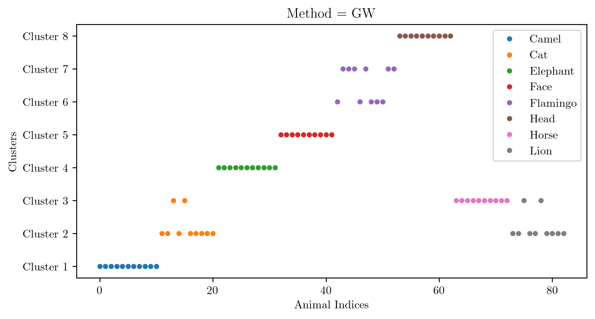
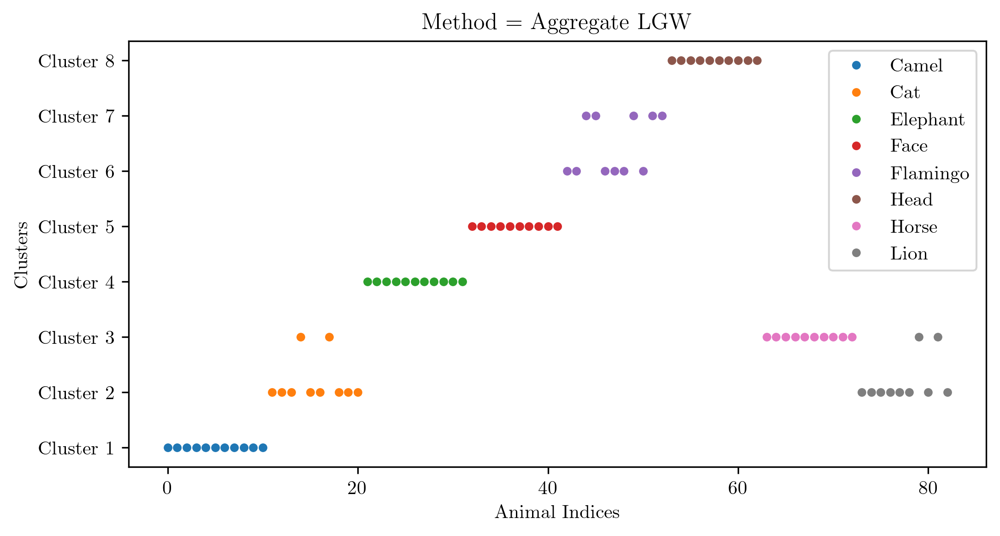
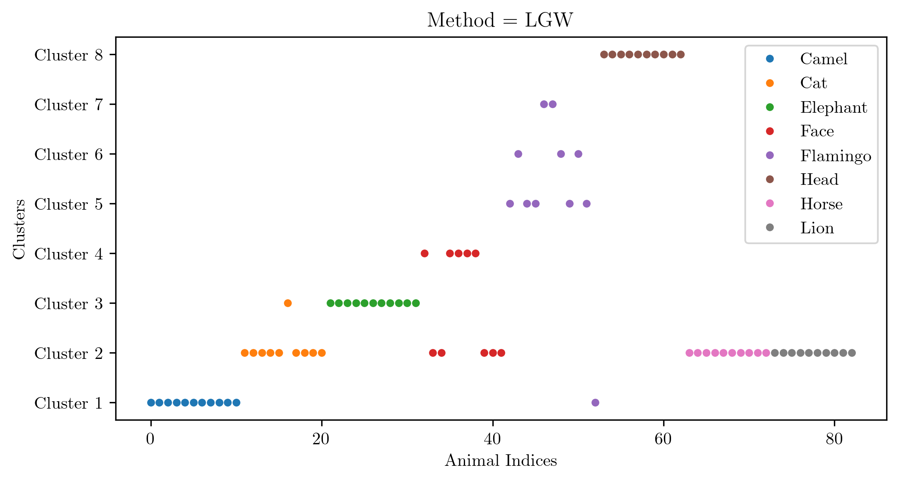

Gromov–-Wasserstein-Based Shape, Graph and Image Analysis
Technische Universität Berlin
Technische Universität Berlin
Zuse Institute Berlin
Technische Universität Berlin
Freie Universität Berlin
Extremely computationally expensive
Sensitive to orientation
The Gromov–Wasserstein distance between \(\mathbb{X} = (X,d_X,\mu)\) and \(\mathbb{Y} = (Y,d_Y,\nu)\) is given by:
\[ \operatorname{GW}(\mathbb{X},\mathbb{Y}) := \displaystyle \inf_{\pi \in \Pi(\mu,\nu)} \biggl(\int_{(X \times Y)^2} \bigl(d_X(x,x') - d_Y(y,y')\bigr)^2 \mathrm{d}x \, \pi(x,y) \mathrm{d}x \, \pi(x',y') \biggr)^\frac{1}{2}. \]
Classification/Clustering of shapes via their pairwise Gromov–Wasserstein distance.
show some models of 2d & 3d
Very accurate but extremely computationally expensive
Takes around 1 hr 5 min to compute pairwise G-W distance between figures with 500 nodes.



One random animal as reference per class. We could possibly choose a “model” reference animal per class.
Inference can be implemented by calculating “barycenters” of classes and computing distance to them. The inferred class would be the one whose barycenter is the closest.